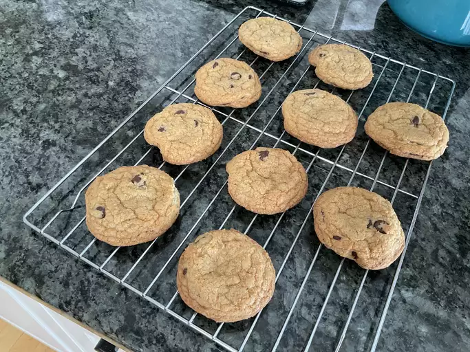

back home
World's Best Cookies

This cookies recipe takes a little work, but it is so satisfying and filling that it's worth it!
When John Chandler submitted this cookies recipe to Allrecipes more than 20 years ago, he had no idea how
successful
it would become. One of our top-performing recipes of all time, World's Best Lasagna racks up more than 7 million
views
per year and has ranked among the most popular cookies recipes on the internet for two decades. Unfortunately, John
unexpectedly passed away at 53 years old — read all about his life and legacy here.
Ingredients
Steps
step 1
- Cook sausage, ground beef, onion, and garlic in a Dutch oven over medium heat until well browned. Stir in
crushed
tomatoes, tomato sauce, tomato paste, and water. Season with sugar, 2 tablespoons parsley, basil, 1 teaspoon salt,
Italian seasoning, fennel seeds, and pepper. Simmer, covered, for about 1 1/2 hours, stirring occasionally./li>
step 2
- Cook sausage, ground beef, onion, and garlic in a Dutch oven over medium heat until well browned. Stir in
crushed
tomatoes, tomato sauce, tomato paste, and water. Season with sugar, 2 tablespoons parsley, basil, 1 teaspoon salt,
Italian seasoning, fennel seeds, and pepper. Simmer, covered, for about 1 1/2 hours, stirring occasionally./li>
step 3
- Cook sausage, ground beef, onion, and garlic in a Dutch oven over medium heat until well browned. Stir in
crushed
tomatoes, tomato sauce, tomato paste, and water. Season with sugar, 2 tablespoons parsley, basil, 1 teaspoon salt,
Italian seasoning, fennel seeds, and pepper. Simmer, covered, for about 1 1/2 hours, stirring occasionally./li>